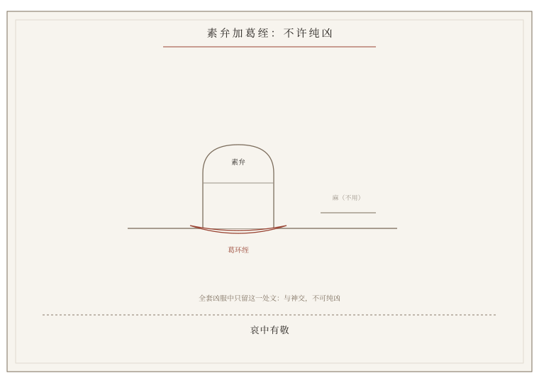

檀弓下 · 四·二十二 · 第 347 课
弁绖葛而葬，与神交之道也，有敬心焉。
说什么事：天子诸侯下葬时，戴素弁、加葛制的环绖，不纯用麻——这是与神交接之道，其中有一分敬心。
落在哪一层：以「服」量敬。论「丧服中唯一不许纯凶的一处」。
为何编在此位：三百四十六课论袒袭之开合，此课论冠绖之文质。同是「变」，一在其时，一在其质。
【经】弁絰葛而葬，與神交之道也，有敬心焉。
【注】接神之道，不可以纯凶。天子诸侯变服而葬，冠素弁，以葛为环绖，既虞卒哭，乃服受服也。《杂记》曰：「凡弁绖，其衰侈袂。」／逾时哀衰而敬生，敬则服有饰，大夫士三月而葬，未逾时。
【疏】葬时居丧，著丧冠麻绖，身服衰裳，是纯凶也。又寻常弁绖，以麻为环绖，今乃去丧冠，著素弁，又加环绖，用葛，不以麻，故云交神之道，不可以纯凶。／云「天子诸侯，变服而葬」者，以下云「有敬心焉」，以日月逾时，故敬心乃生。大夫与士，三月而葬，敬心未生，故知天子诸侯也。／云「冠素弁，以葛为环绖」者，素谓素帛为弁……然则要带犹用麻也。／引《杂记》「其衰侈袂」者，证既服弁绖，其衰亦改。案《丧服》衰袂二尺二寸，袪尺二寸，则葬时更制其衰袂三尺三寸，袪尺八寸。／熊氏、皇氏等并为锡衰。皇氏又引郑说，称郑冲云：「《小记》曰，诸侯吊必皮弁锡衰，则此弁绖之衰，亦是吊服也。」案《丧服》改葬尚服缌麻，今葬服锡衰，其义疑也。
弁 冠之一种。素弁即以素帛为之。
绖 丧服中的带，在首为首绖，在腰为腰绖。
葛 葛布。此处指以葛为环绖，代麻。
纯凶 全用凶服，无一处文饰。
交神 与神相接。葬者，形归土而神将去，故曰交。
逾时 过了一个时节。天子诸侯殡久，故逾时。
侈袂 袖子加宽。侈，大也。
戴素弁、加葛环绖而下葬，这是与神交接之道，其中有一分敬心。
此章一断一释：「与神交之道」，是其所以然；「有敬心焉」，是其所以起。
丧服本以麻为质，纯凶无饰。而葬之一刻，独许换素弁、换葛绖。此一换，是全套凶服中的一处「不凶」。
礼之精微，往往就在这种「一处」。
第一层 为什么葬要「交神」 葬是把形送走，把神交出去。此一刻，人不再只是孝子，也是「送神者」。
对神不可纯凶：凶服是生者对死者的哀，而神前当有敬。一身而兼二职，故其服亦兼二质。
第二层 素弁与葛绖：换的是「质」，不是「等」 麻是凶质，葛是文体；丧冠是凶，素弁是文冠。
所换者，皆在质而不在等：仍是天子诸侯之服，仍是环绖，只是材料与冠式变了。此谓「不改其等，而改其文」。
第三层 「逾时哀衰而敬生」 注一句极重要：天子诸侯殡久，日月逾时，哀渐衰而敬渐生，敬生则服有饰。
此语把「敬」当作哀的自然结果：哀久则杀，杀则敬生。不是哀没有了，是哀沉淀了。
大夫士三月而葬，未逾时，故敬心未生，不得变服。此见礼不催人：敬是不能催的，唯待其时。
第四层 疏的辨：衰亦改 引《杂记》「其衰侈袂」，证不但冠绖改，衰亦改：衰袂由二尺二寸增至三尺三寸，袪由尺二寸增至尺八寸。
疏末一句「今葬服锡衰，其义疑也」，是疏家自留的疑：改葬尚服缌麻之轻，而葬反服锡衰之文，二者不相称。留疑不掩，是注疏的诚实。
第五层 今日之用：在最痛的时候，留一分敬 今人办丧，多在「尽情」与「体面」之间摇摆。
此节所示，是一条更细的路：在最凶的场合，留一处文。不是全盘转成典礼，只换一件冠、一条带。这一处文，是替「哀」留一个与「敬」相接的口。
与今日何干 今有丧礼，孝子全程素服，唯于起灵、下葬时换一次礼服，或于祭时加一礼冠。此节正为此类做法立据：不是不哀，是哀中有一分要与神相接。
| 左 | 右 |
|---|---|
| 弁绖葛而葬 | 素弁加葛环绖 |
| 纯凶 | 丧冠麻绖衰裳 |
| 交神之道 | 不可以纯凶 |
| 有敬心焉 | 敬生则服有饰 |
| 逾时 | 殡久，哀衰敬生 |
| 三月而葬 | 大夫士，未逾时 |
| 侈袂 | 衰袂加宽 |
| 要带犹麻 | 非全去麻 |
| 锡衰 | 一说，疏自疑 |
画一顶冠置于案上，视点侧面。冠为素色无纹，冠梁一道，冠沿平直；冠前置一圈细环，环上可见编织纹路（以细斜线示意），环为浅褐色而不作黑色。冠与环之间不画连线。案上另置一小段麻绳，麻绳粗糙，与环并列而不相接。赭色只用在细环一道。
